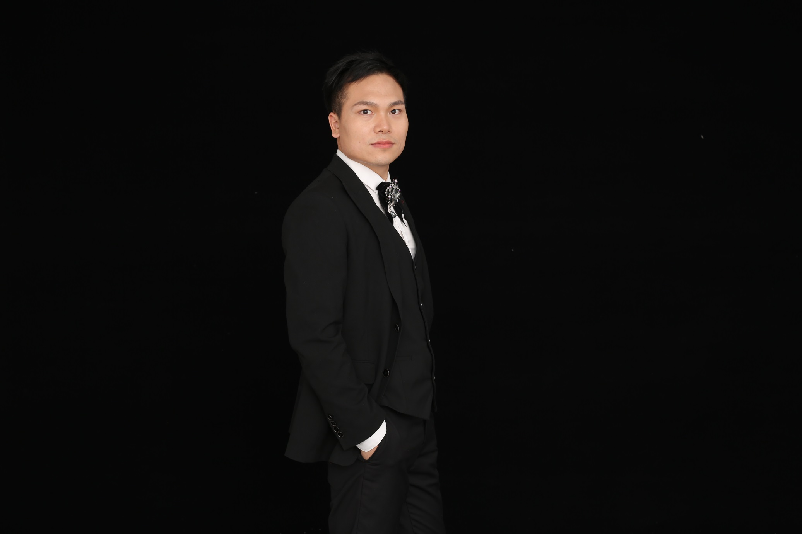

Guwen Han is currently pursuing the PhD degree with Zhejiang University, Hangzhou, China, under the supervision of Qi Ye and Jiming Chen. He obtained his Bachelor's degree and Master's degree from Hangzhou Dianzi University in 2020. His research interest includes Machine Learning、Computer Vision、3D data Compression and Reconstruction.